沒事多喝水！多喝水沒事！
沒事多喝水！多喝水沒事！
在媽寶家看到這台，立刻自己引火自焚！？噗～根本沒人勸敗
自己在心中莫莫的決定，摩卡卡今年生日禮物就是它啦！Hagen Cat it 活水機
卡卡終於可以不用再喝毛毛水啦！
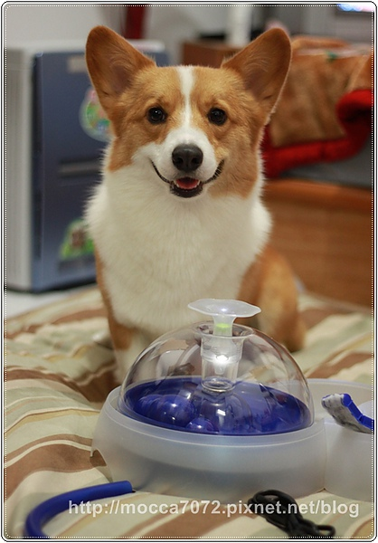
我買的型號是上一代的，因為造型我覺得比新的還可愛！哈哈
而且我想要有活泉流出來的感覺，醬的水感覺好好喝哦！
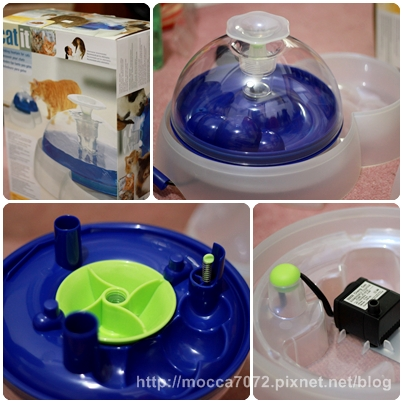
爬文看到P麻說可以自己DIY買過濾棉跟活性碳替換，省摳摳！
當然也可買原廠的，只不過如果需要常更換的話，累積下來也是筆小花費！
不過我目前也還沒真正自己買回來剪就是惹！（應該不會太難ㄅ？ ）
）
搞不好弄到最後，呃.......直接糾媽寶麻一起囤貨！XDDDD
後面有個小孔是倒水的地方，把彈簧拉起來水就不會流出來了
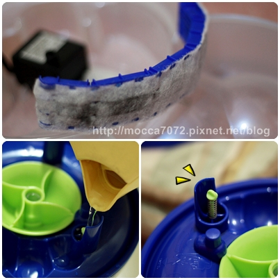
收到禮物的摩卡卡，好奇的上下打量活水機！
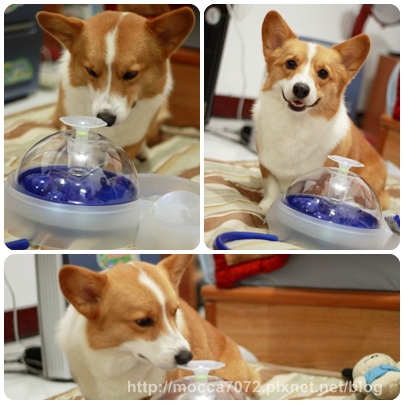
為了吸引他喜歡這台機子，我跟他說：卡卡！這裡面有魚魚～
哈哈哈！結果這傻小子就真的認真的盯著裡面找魚！
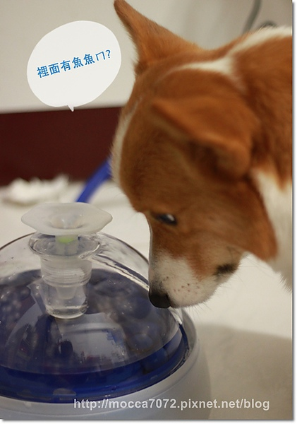
爸特~後來我叫他喝水水，完全不理！一整個只專著堅持在找魚這件事！
不應該騙小蛤的，我錯惹！！.gif")
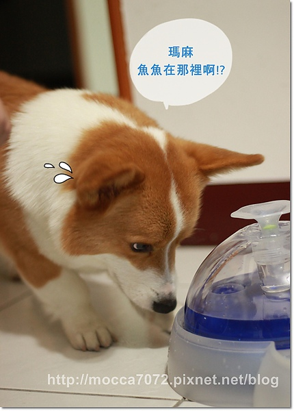
還開始對活水機動手動腳的，看樣子這台活水機性命不保！
這小子完全把他當魚缸在玩啊..............
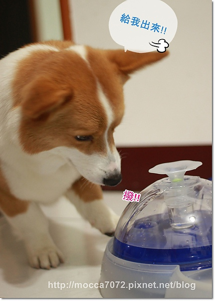
只好再使出另一招，放了個小零食在出水孔！
讓他咬零食時可以邊碰到水，降低他對活水機的敏感度
哇咧～小傢伙找魚的時候膽子倒是很大，吃個零食卻小心翼翼！
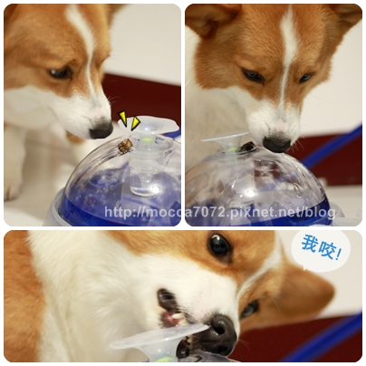
這招果然有效，試了幾次！終於主動去舔流出來的水啦！
平常卡卡喝水量其實算少，希望買了這台卡卡願意多喝點水！
重點我不用再看到水碗裡有髒髒的毛啦！不然每看一次就要換一碗！
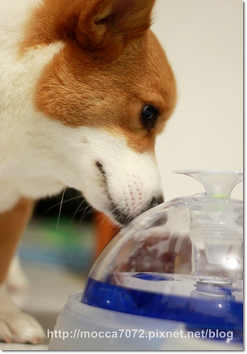
一點一滴幫兒子打造好的環境，結果老北老木吃喝拉睡全都是他的毛！醬對ㄇ？
真的是無可救藥的小狗奴啊！！！泣。。。
=============來自各方神秘小禮物==================
生日蛋糕才剛吃完 ，怎嘛禮物又是便便！？
，怎嘛禮物又是便便！？.gif")
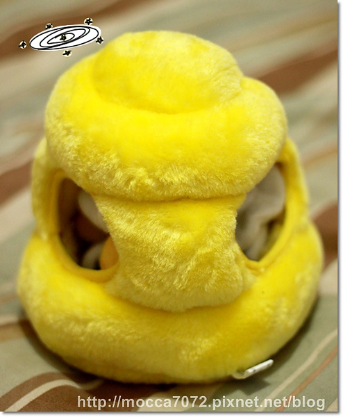
哦哦！有小蜜瘋跑出來啦！超卡哇衣！
這是卡內麻送的小禮物，拿到時候我真的以為它是便便！哈哈哈
還以為我們也太有默契了吧！

卡卡最近熱愛這種洞裡可拉出小玩偶的玩具，拍個照一直偷偷戳戳戳！
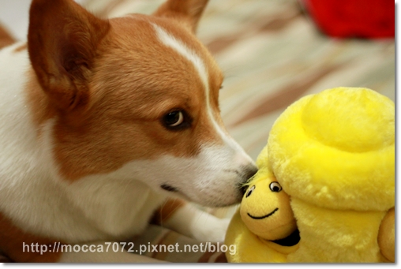
裡面有三隻龐克小蜜瘋，是ROCKER來著！
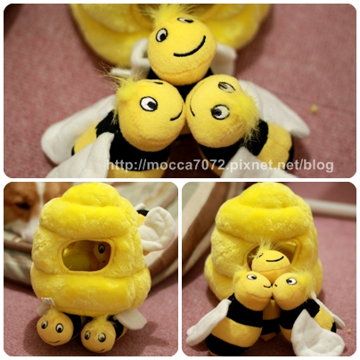
罷佔蜂窩的阿卡卡so man！
連小蜜瘋都探出頭來崇拜新的女王蜂！？ XDDDD
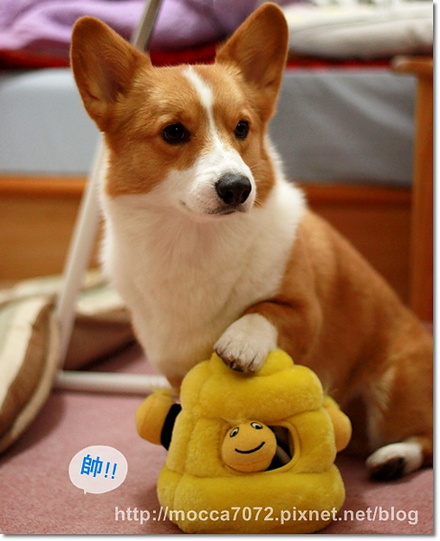
一聲令下！拆除蜂窩行動開始～
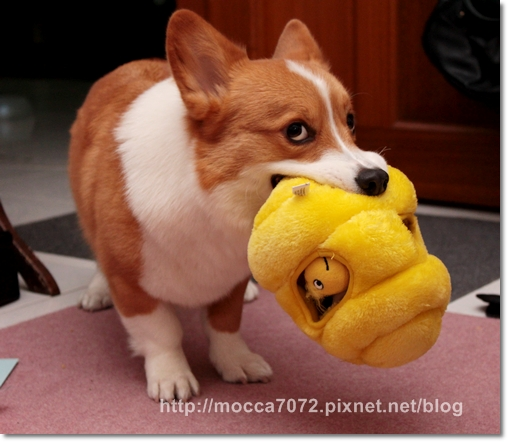
經過蛋蛋玩具的特訓，要抓出小蜜瘋對卡卡來說輕而易舉啊！
直搗洞口殲滅，絕不會破壞蜂窩本體！
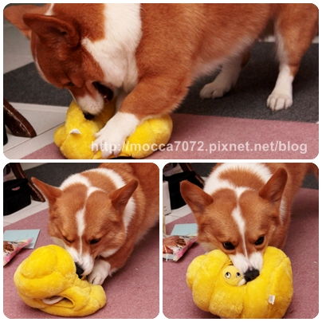
落單的小蜜瘋被拖出來後，居然還被卡卡施以殘酷暴行！
(話說卡卡牙牙好白啊！哈哈哈～這都是猛哥的功勞呦！)
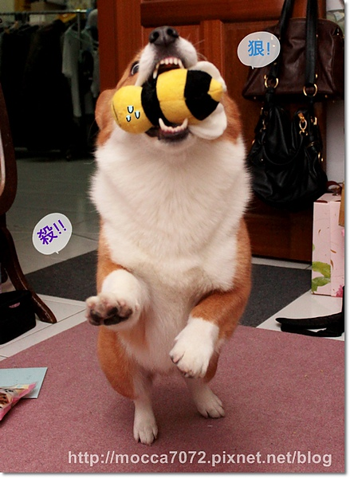
鏘鏘鏘～鏘！完成盜採蜂蜜的成就！
我們家阿卡卡玩玩具很溫柔的！小蜜瘋只是被拖出來沒有分屍哦！
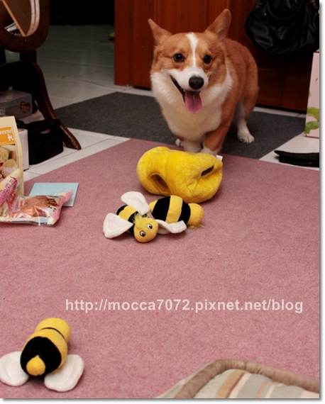
這個玩具真好玩！！謝謝媽媽桑  卡嚕比舞尬意~舞尬意~
卡嚕比舞尬意~舞尬意~
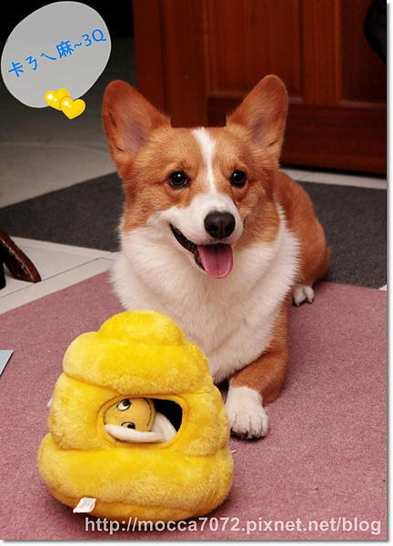
神秘禮物趴吐來自-超級大粉絲咖哩麻
這位小姐路上看到柯基都先尖叫再說，瘋狂程度很驚人！哈哈哈
糾甘心～附上一張寫滿滿的卡片~但怎嘛沒附上辣妹照!?XD
卡卡現在用的也是這牌香水，本週末要用櫻花洗香香當櫻花妹
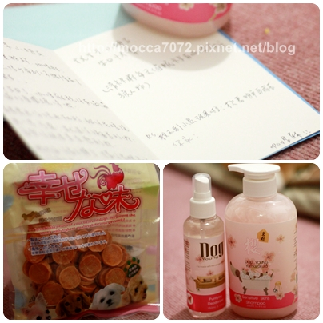
神秘禮物趴水是同是high咖的coco麻飛鴿送來的！
香腸雙節棍超好笑～當圍巾也很帥！
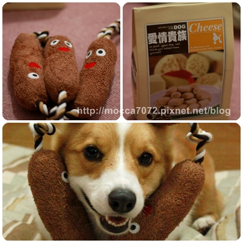
本來跟卡卡玩拉址，但老木技術不佳！香腸棍一直K到他的頭！
用半瞇的小眼睛一直努力咬(因為被打到臉XD) 好可憐啊！
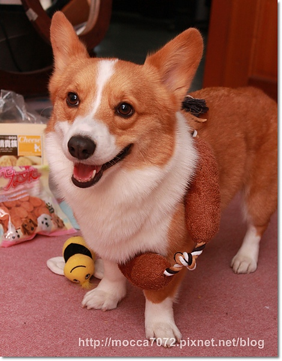
所以...我把它繞在卡卡身上讓他自己去解套
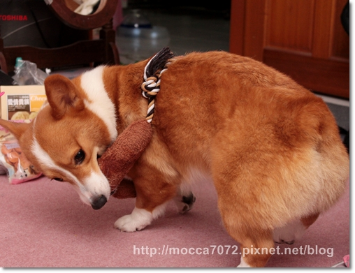
卡卡：絕對不能讓它卡在頭！拚惹～
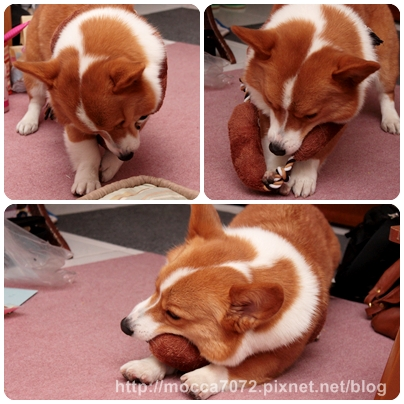
ㄉㄥ楞！
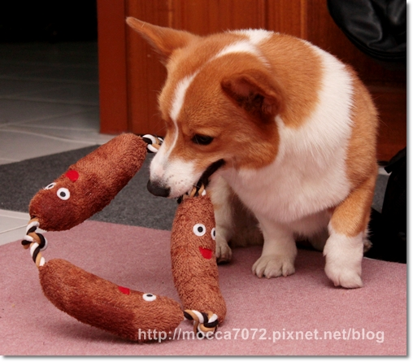
賀～～再度完成解香腸的成就！！
卡卡：這玩法比跟瑪麻玩還好玩（揉頭）
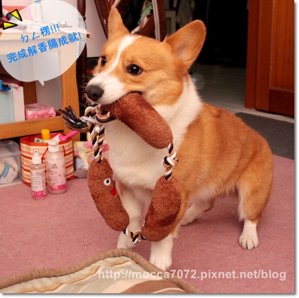
謝謝各位麻麻的厚愛！摩卡卡給泥綿啾一下～
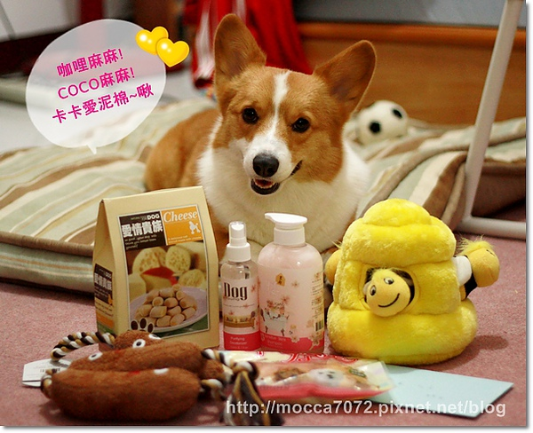